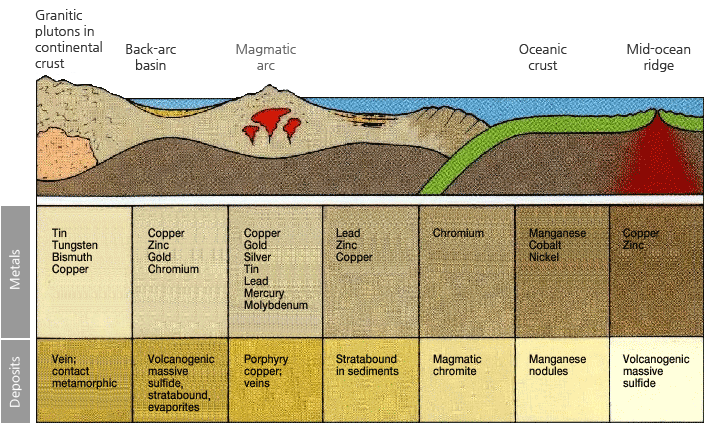
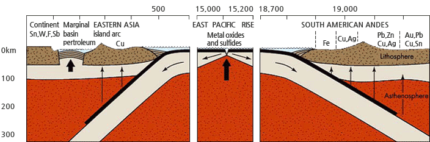
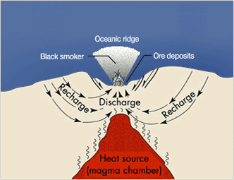
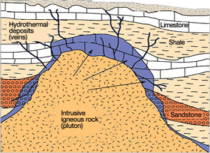
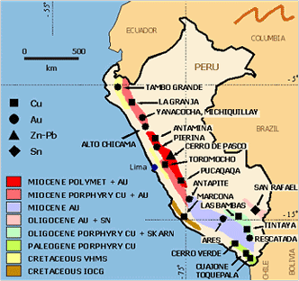
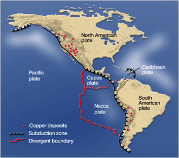
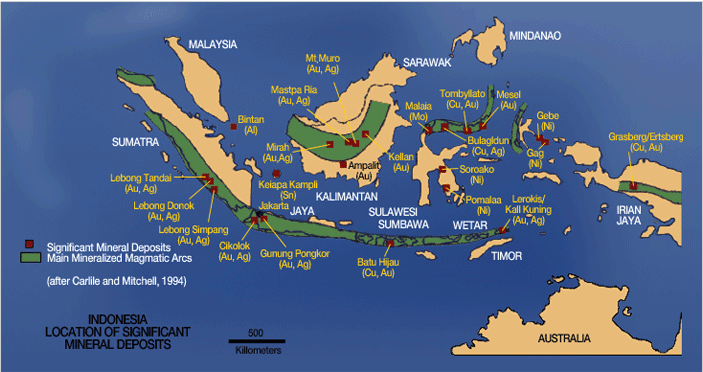
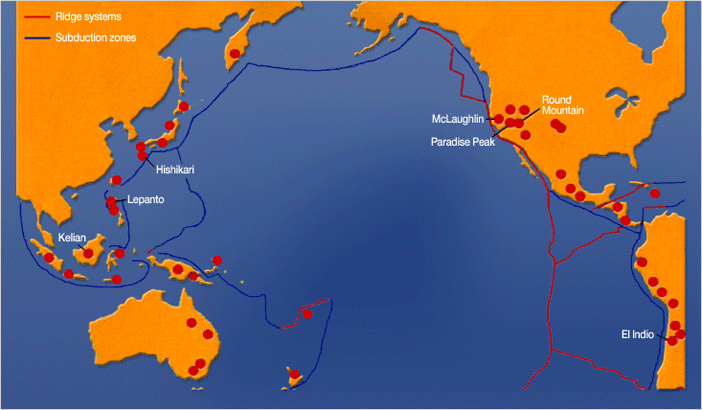

생성원리

광상의 생성
지구가 진화하면서 지각은 수없이 많은 지질작용에 의해 변화를 겪어오고 있으며 이러한 지질작용의 결과, 지각의 구성물질들은 변화하는 환경에 적응하면서 새로운 화합물인 각종 광물을 생성하기도 하고 변질되기도 합니다. 또한, 특정성분을 농집시키거나 분해시키는 과정도 거치는데, 이러한 일련의 과정을 광상성인 (genesis)이라 합니다.
대륙지각과 해양지각에 대한 지질학적인 지식이 증가하고 판구조론에 의한 지구의 지체구조가 밝혀짐에 따라 광상의 성인도 판구조론과 관련하여 해석되어 오고 있습니다. 현재 지질과학 현상의 해석에 있어서 가장 획기적이고 설득력을 가지는 과학적인 이론이 판구조론임에 이의를 제기하는 사람은 별로 없을 줄 압니다. 이렇듯 많은 금속광상의 생성 원인과 해석을 판구조론적 입장에서 찾고 있는 것과 같이, 지구상에 지질운동의 결과산물로 분포하고 있는 많은 동, 금, 아연, 크롬 등의 광상들도 판구조 운동과 밀접한 상관성을 보여줍니다.
수렴 및 발산경계와 그 부근의 광상
수렴경계

[ 그림1. 수렴경계 일대의 광상분포 ]
그림1과 같이 판의 수렴 혹은 확장경계에서 생성되는 특징적인 광상이 있는가 하면, 경계 부근의 호상열도, 배호분지 등에서 생성되는 특징적인 광상이 있기도 합니다. 수렴경계에서는 해양판이 대륙판 밑으로 섭입함에 따라 해양판이 재용융되어 생성된 마그마가 분출하거나 관입할 때 대규모 광상이 생성됩니다. 현재 지구상에 분포하고 있는 많은 광상들 특히 동(copper), 금(gold) 광상의 분포특성은 판의 수렴경계인 화산대 및 지진대와 일치하는 경향을 보여주고 있음을 확인할 수 있습니다.
발산경계

[ 그림2. 동태평양 해령 부근과 확장영역의 광상분포 ]
심해저의 확장경계에서는 검은 열수(black smoker)가 엄청난 양의 황화광물을 분출하고 있으며 판이 이동함에 따라 육지에 부가되어 생성되는 새로운 형태의 광상이 주목을 받고 있습니다. 발산경계(해령)와 그 부근에서는 다양한 금속산화물과 황화물이 주로 농집된 광상이 나타나는 특징을 가집니다.
광상생성의 주요 메커니즘
우리는 흔히 광상(鑛床)의 정의를 지각 중에 광물이 경제적으로 이익을 내면서 채굴할 수 있을 만큼 또는 현재는 채굴가치가 없으나 미래에 이익을 내면서 채굴할 수 있을 만큼 모여 있는 장소로 국한하여 사용합니다. 우리가 찾고자 하는 경제성을 가지면서 개발할 수 있는 유용광물의 집합체인 광상은 앞서 설명한 바와 같이 거시적인 판구조운동과 관련되어 형성되며, 아울러 판의 운동에 기인되어 일어나는 화산활동, 변성작용, 마그마 활동에 의해 생성됩니다. 지구내부물질이 지표 가까이 상승하는 바다 속 해령부근에는 광물성분과의 반응, 운반역할을 담당하는 해수의 공급이 원활하여 막대한 양의 물질들이 빠르게 냉각, 농집된 광상이 발달될 수 있으며, 후기 마그마 및 열수용액이 기존의 암석의 틈을 따라 이동하면서 주위 암석(모암)과 반응하여 주위에 유용광물이 침전되는 과정을 통해서도 광상을 형성할 수 있습니다.(그림3-1, 3-2 참조)
- 
[ 그림3-1. 중앙해령의 광상생성 모식도(괴상 황화물 광체) ]
- 
[그림3-2. 후기마그마 및 열수용액에 의한 광상
(접촉변성작용 포함)]
주요 광상분포
그림[4-1,2,3,4]에서 보듯이 남미 안데스 지역에서 판의 침강(수렴경계)에 따른 동, 금, 아연 광상의 분포특성과 동태평양 해령(발산경계)에서의 구리(동) 광상의 분포, 그리고 동아시아의 수렴경계 부근에서의 동, 금, 은 등 주요광상의 분포특성을 보여주고 있습니다.
- 
[ 그림4-1. 남아메리카 안데스지역 주요 금속광상 분포 ]
- 
[ 그림4-2. 동태평양 해령위치 및 아메리카 서부해안
구리광상 분포 ]

[ 그림4-3. 동남아지역 주요 광상분포 ]

[ 그림4-4. 태평양 주요 동,금광상 분포 ]
우리가 광상의 분포특성과 판구조론을 연관지어 얘기할 때 흔히 예로 드는 것이 인도-호주판과 태평양판의 운동 결과의 산물로 많은 금속광상을 가지고 있는 동남아지역(인도네시아, 필리핀 일대)과 태평양판, 나즈카판이 남아메리카판 하부로 침강하는 해구 상부인 페루-칠레의 동, 금 광화대 지역입니다. 인도네시아는 25,000여개의 섬으로 이루어진 도서국가로서 판의 침강운동과 관련하여 수마트라-자바-플로레스섬을 잇는 해구 및 이와 수반된 상부에 다수의 금, 동 광상이 분포하고 있으며, 남미 및 북미 서부해안을 따라서도 많은 동, 금광상이 분포하고 있습니다.